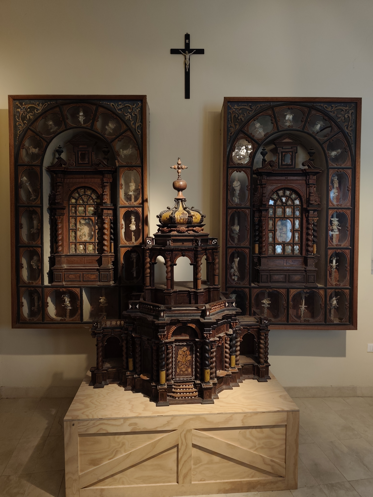
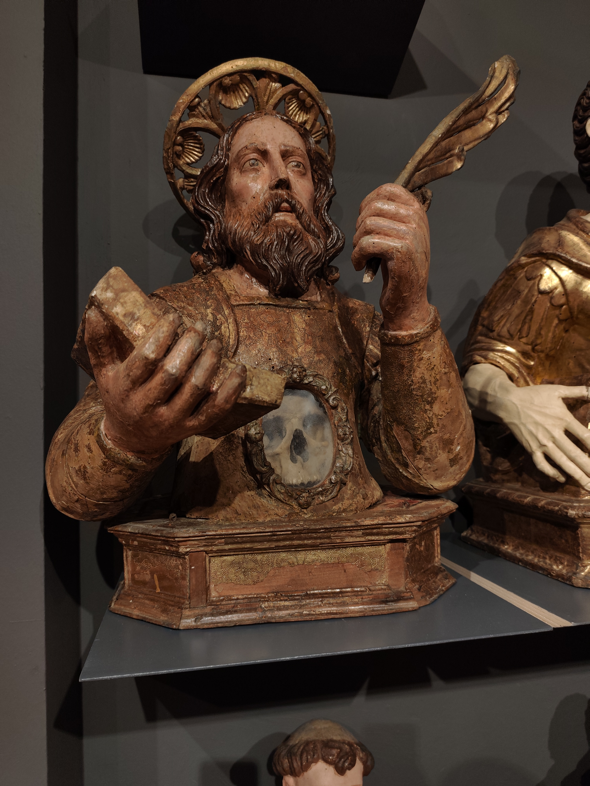
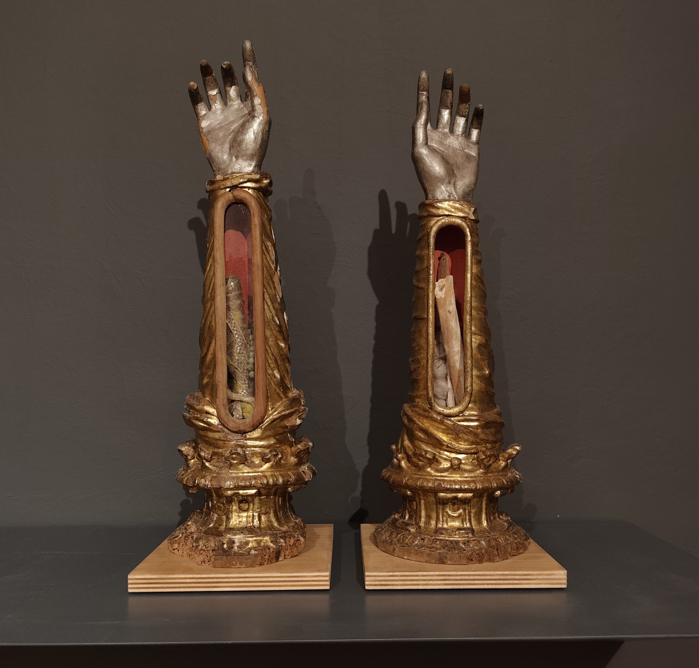

Nel museo sono conservati numerosi reliquiari in legno che custodiscono ossa di martiri provenienti dalle catacombe romane che furono riscoperte nel XVI secolo. Le reliquie vennero distribuite in molte chiese italiane.

Spesso non si conoscevano i veri nomi dei martiri, per questo venivano assegnati nomi simbolici legati alle virtù, come Felicissimo o Gaudenzio. Nella tradizione cristiana non è reliquia solo l’osso del santo: anche un oggetto che entra a contatto con esso, come un fazzoletto o un pezzo di stoffa, diventa a sua volta reliquia.

Molte opere del Museo Capitolare di Atri sono reliquari del Seicento in legno dorato, creati a Napoli per custodire e mostrare le reliquie dei santi. I fedeli potevano osservare direttamente ossa o frammenti attraverso piccoli vetri, rafforzando così la devozione e il legame con la figura del santo, e talvolta i resti erano decorati con fiori, nastri o tessuti per aumentare il valore estetico e simbolico. Particolarmente curiosi sono i reliquiari a forma di braccio, che contengono l'osso del santo e venivano esposti nelle feste per benedire i fedeli. Spazi vuoti indicano reliquie mancanti o rimosse nel tempo.
